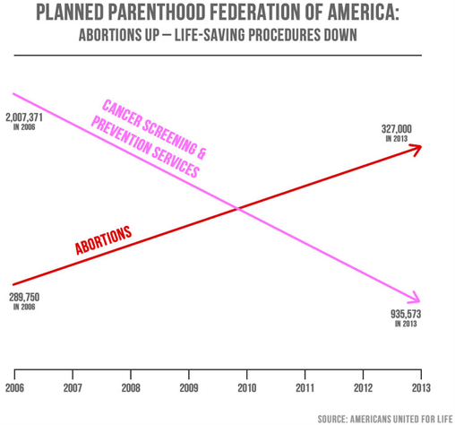
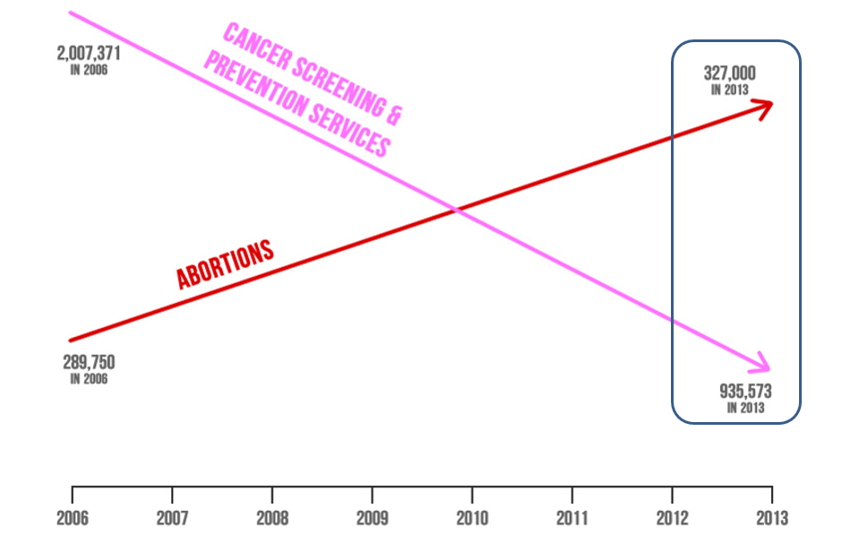
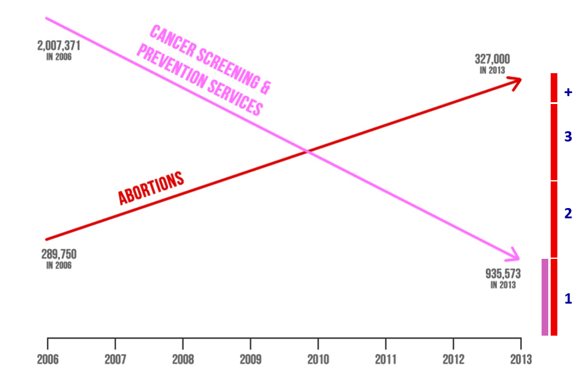
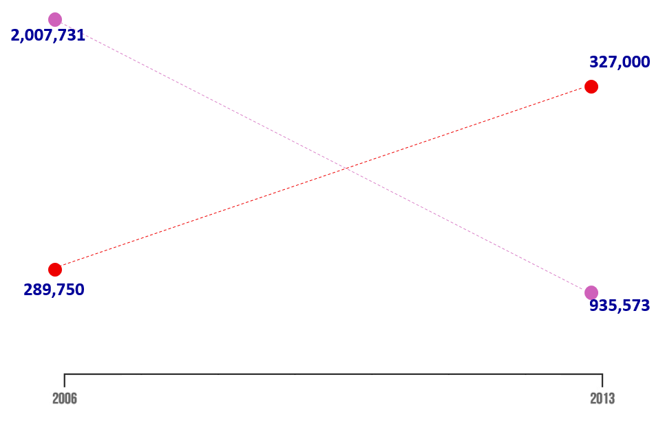
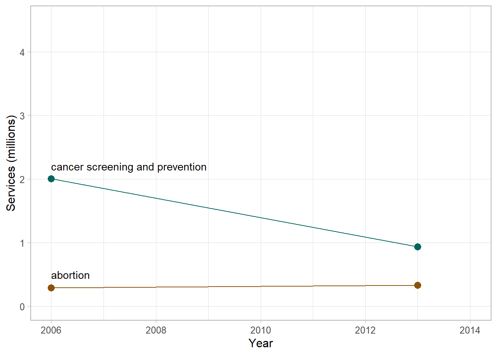
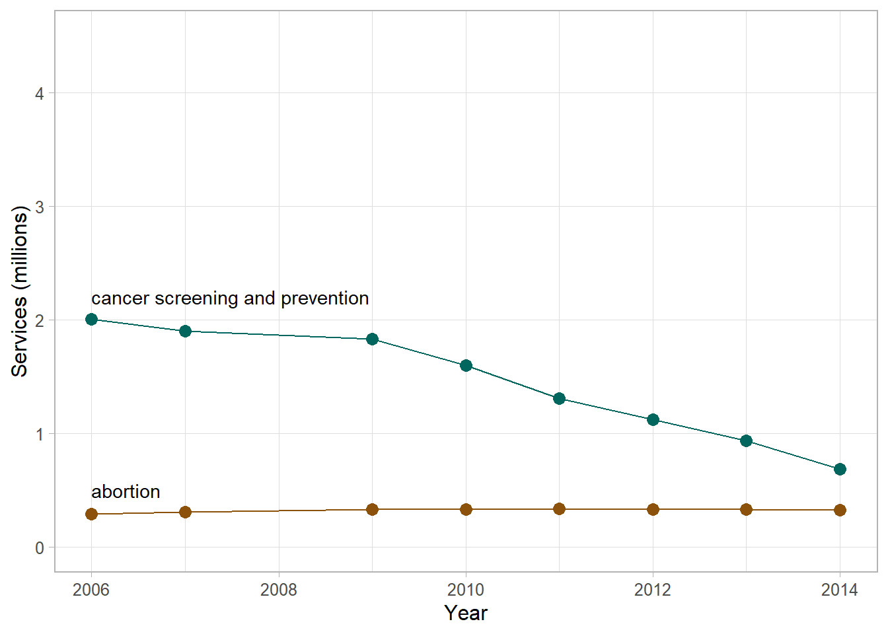
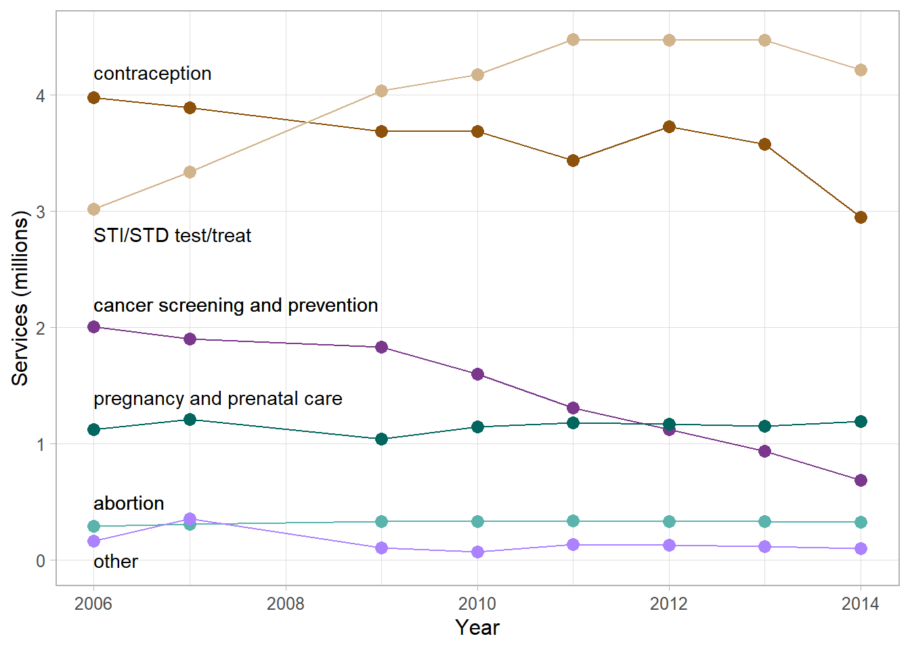
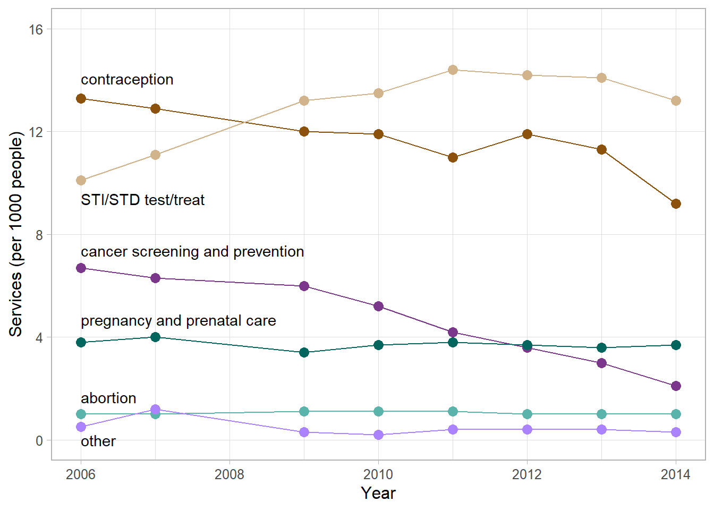
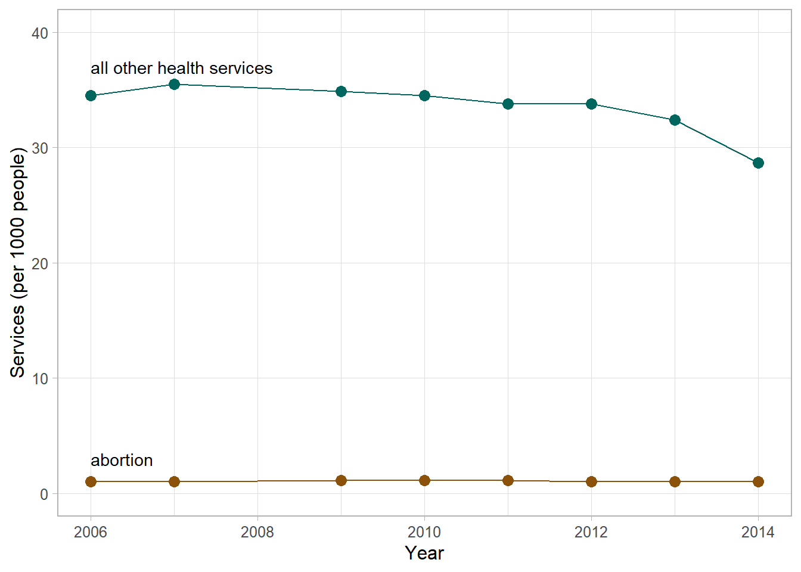
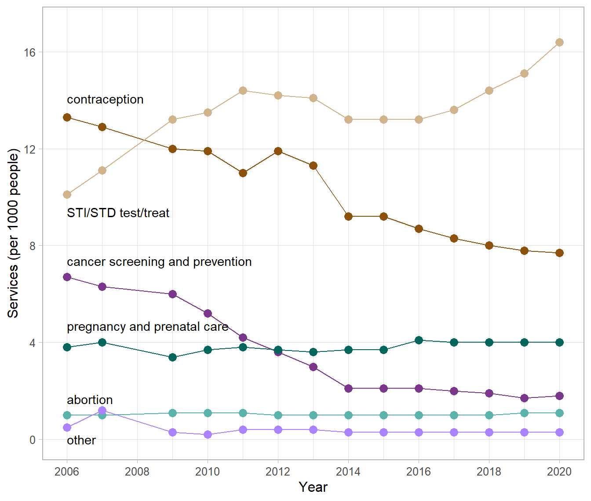

R code
# packages used
library("ggplot2")
library("data.table")Revisiting the rhetoric of a deliberate visual lie, updating the data set, and providing data and code for reproducibility.
Richard Layton
2022-05-27
I critique and correct a well-known visual lie from a 2015 Congressional hearing in which the authors abuse chart-making conventions to serve their rhetorical goals. I explore what authentic stories these data tell and what authentic questions the data raise. Originally posted in 2017, here I update the data set through 2020, comment on the emerging trends, and add R code and provide data sets for reproducibility.
On 2015-09-29 in a televised Congressional hearing, Representative Jason Chaffetz, Chairman of the US House Committee on Oversight and Government Reform, challenged Cecile Richards, president of the Planned Parenthood Federation of America (PPFA), to respond to this graph,

At the hearing, Ms. Richards responded to the graph’s misleading message, saying “It doesn’t feel like we’re trying to get to the truth here.”
Interviewed two days later, Chairman Chaffetz denied the graph was misleading. He ignored questions about the visual message and disingenuously focused on the text, saying, “I stand by the numbers.”
Chaffetz’s denial notwithstanding, visual displays convey visual messages. And the data for this graph were compiled in a 2015 propaganda piece by Americans United for Life (AUL), a forced-birth organization dedicated to restricting reproductive rights of pregnant parents.
Immediately following the hearing, a number of data visualization experts published critiques, for example, Linda Qiu, Keith Collins, Tessa Dignum, or Kevin Drum.
In this post, I focus on how Chaffetz abuses the conventions of visual rhetoric to serve his rhetorical goals and what truthful stories are actually told by these data.
The R code for the post is listed under the “R code” pointers.
The vertical scales for the two arrows are different (a “dual y-axis”), implying that 327,000 is greater than 935,573. To conceal the problem, the authors purposefully omit the vertical scales while retaining the horizontal time scale.

The authors use a conventional numerical horizontal time scale to create the perception that their message has a rational basis in the data, yet they visually distort the relationships among these numbers to support their predetermined message. Visually, in 2013, abortions appear to exceed cancer screenings by a ratio of more than of 3:1.

The authors promote their views further by selecting value-laden colors. Pink, associated in the US with breast cancer awareness, is good (“life-saving” in the graph subtitle), while red is bad, what the AUL calls “life-destructive”, implying blood and death (the AUL casts Planned Parenthood as “Abortion, Inc”).
The arrowheads distort the story, suggesting a “strong continuation of these trends, which we don’t know to be true” (Noah Iliinsky, interviewed by Linda Qiu).
The time scale implies that 8 years of data are displayed. However, numerical values are shown for only 2006 and 2013. And data markers—a visual convention of the scatterplot form—are not shown at all. Edward Tufte has argued that graphics like this have achieved a “graphical absolute zero, a null data-ink ratio” (Tufte, 1983, p. 95).
Furthermore, that the lines cross creates the unsubtle visual implication that the trend in abortions is a dominant trend—which is the entire point of the deception.
Here, I show the four data markers, omit the arrowhead drama, and emphasize the text (the numbers that Chaffetz “stands behind”). The revised graph forces us to see how little information is being conveyed and how the relationships have been visually distorted.

In redesigning the graph, as others did immediately following the hearing, my goal is to discover what undistorted stories these data tell. I obtained the data from Planned Parenthood annual reports (e.g., 2016, 2015, 2014, etc.), the same sources claimed by Jason Chaffetz and the AUL.
I start by reading in the data (updated to include data through 2020). The data are available in the blog data directory as a CSV file.
year service N
<int> <char> <int>
1: 2006 contraception 3977333
2: 2007 contraception 3889980
3: 2009 contraception 3685437
4: 2010 contraception 3685437
5: 2011 contraception 3436813
---
80: 2016 other 108309
81: 2017 other 103585
82: 2018 other 103640
83: 2019 other 87990
84: 2020 other 92570I start by showing the same four numbers with a common vertical scale and applying a color scheme that is not value-laden.
# for this chart, restrict the data to two years and two services
x <- dt[year %in% c(2006, 2013) & service %chin% c("cancer", "abortion")]
# graph
f <- ggplot(x, aes(x = year, y = N/1e6, color = service)) +
geom_line() +
geom_point(size = 3) +
theme_light(base_size = 12) +
theme(legend.position = "none",
panel.grid.minor.y = element_blank()) +
labs(x = "Year", y = "Services (millions)") +
scale_y_continuous(limits = c(0, 4.5), breaks = c(0, 1, 2, 3, 4)) +
scale_x_continuous(limits = c(2006, 2014)) +
scale_color_manual(values = c("#8c510a", "#01665e")) +
annotate("text",
x = c(2006, 2006),
y = c(0.5, 2.2),
label = c("abortion", "cancer screening and prevention"),
hjust = c(0, 0))
# display
f
Next, I include the data for all available years, including 2014 data which has become available since the time of the hearing.

Already the story has a nuance. The data provoke the question: what caused the decline in cancer screening and prevention services after 2009? The AUL claims the decline is evidence of Planned Parenthood’s changing business model, from a provider of “life-saving” to “life-destructive” services. An explanation more in touch with reality is the enactment of the Affordable Care Act (ACA) in 2010, providing more people access to health insurance thereby potentially reducing their reliance on Planned Parenthood. In addition, especially since 2003, the medical community has recommended less frequent procedures for the early detection of cancer (American Cancer Society).
The Planned Parenthood annual reports indicate that abortion and cancer screening and prevention are not the only services they provide. The next figure adds contraception, STI/STD testing and treatment, pregnancy and prenatal care, and “other” services: all the services in the data set.
# for this chart, all services from 2006 to 2014
x <- dt[year <= 2014]
# edit the current chart object
f <- f %+%
x +
scale_color_manual(values = c("#5ab4ac", "mediumorchid4", "#8c510a", "mediumpurple1", "#01665e", "tan")) +
annotate("text",
x = 2006,
y = c(0, 0.5, 1.4, 2.2, 2.8, 4.2),
label = c("other",
"abortion",
"pregnancy and prenatal care",
"cancer screening and prevention",
"STI/STD test/treat",
"contraception"),
hjust = 0)
# display
f
This graph suggests we might want to find out what caused the increase in STI/STD testing and treatment or what’s behind the gradual decline in contraceptive services. The graph also shows that compared to the number of cancer services, between two and four times as many STI/STD services were provided. A similar ratio obtains for cancer services compared to contraception. Moreover, on this common scale, abortion services appear to be fairly constant, especially compared to the dramatic changes seen in other types of service.
So why did the original graph compare abortion only to cancer screening? The answer is cherry picking (ignoring inconvenient data): the decline in cancer screening and prevention services is the only trend in these data that can be used to support AUL’s argument that Planned Parenthood is “abandoning life-saving” services.
In a final refinement of the data, I account for population increase. To avoid a distorted view of time-series data, numbers of services should be studied on a per capita basis—in the same vein as accounting for inflation when studying dollar amounts over time.
I use total US population data from the US Census (World Bank, 2022-01-14). These data are available in the blog data directory as a CSV file.
Dividing the number of annual services by the annual population yields the per-capita version of the chart (strictly speaking, services per 1000 people). STI/STD services have seen a slight per capita decline since 2011, a trend not seen in the earlier figure. Otherwise, nothing stands out as particularly noteworthy compared to the earlier graph.
# read in the population data
pop <- fread("data/ppfa-data-us-pop.csv", header = TRUE)
# join and compute the per-capita values
x <- merge(x, pop, by = "year", all.x = TRUE)
x[, per_thou := round(N / (us_pop / 1000), 1)]
# graph
f <- ggplot(x, aes(x = year, y = per_thou, color = service)) +
geom_line() +
geom_point(size = 3) +
theme_light(base_size = 12) +
theme(legend.position = "none",
panel.grid.minor.y = element_blank()) +
labs(x = "Year", y = "Services (per 1000 people)") +
scale_y_continuous(limits = c(0, 16), breaks = seq(0, 16, 4)) +
scale_x_continuous(limits = c(2006, 2014)) +
scale_color_manual(values = c("#5ab4ac", "mediumorchid4", "#8c510a", "mediumpurple1", "#01665e", "tan")) +
annotate("text",
x = 2006,
y = 3.35*c(0, 0.5, 1.4, 2.2, 2.8, 4.2),
label = c("other",
"abortion",
"pregnancy and prenatal care",
"cancer screening and prevention",
"STI/STD test/treat",
"contraception"),
hjust = 0)
# display
f
Lastly, because Jason Chaffetz (following AUL) claims that Planned Parenthood’s business model is based on decreasing “life-saving” procedures and increasing abortions (by implication, “death-serving” procedures), the obvious comparison would be between abortion services and non-abortion services. The next figure shows that comparison directly.
# again, all services from 2006 to 2014
x <- dt[year <= 2014]
# sum total services by year
x[, total := sum(N), by = year]
# create non-abortion summary
x <- x[service == "abortion"]
x[, abortion := N]
x[, nonabortion := total - N]
x <- x[, .(year, abortion, nonabortion)]
# transform to row-record form
x <- melt(x,
id = "year",
measure.vars = c("abortion", "nonabortion"),
variable.name = "service",
value.name = "N")
# adjust for population
x <- merge(x, pop, by = "year", all.x = TRUE)
x[, per_thou := round(N / (us_pop / 1000), 1)]
# chart
ggplot(x, aes(x = year, y = per_thou, color = service)) +
geom_line() +
geom_point(size = 3) +
theme_light(base_size = 12) +
theme(legend.position = "none",
panel.grid.minor.y = element_blank()) +
labs(x = "Year", y = "Services (per 1000 people)") +
scale_y_continuous(limits = c(0, 40), breaks = seq(0, 40, 10)) +
scale_x_continuous(limits = c(2006, 2014)) +
scale_color_manual(values = c("#8c510a", "#01665e")) +
annotate("text",
x = 2006,
y = c(3, 37),
label = c("abortion",
"all other health services"),
hjust = 0)
The data support Planned Parenthood’s assertion that abortion services account for a fairly constant 3% of all services they provide. However, accounting for “services” rather than numbers of people served is problematic, as discussed by the Michelle Ye Hee Lee of the Washington Post. Nevertheless, I use numbers of services here because those are the data values Chaffetz and the AUL quoted.
Exploring the data as we have raises new questions.
We have to look beyond the raw numbers to find a larger context.
Regarding the drop-off in PPFA non-abortion services, the ACA was enacted in 2010. Between 2010 and 2014, the US Census Bureau reports that the percentage of the US population who were uninsured decreased from 16% to about 12%.
Because a high percentage of Planned Parenthood’s patients can be assumed to be uninsured (in 2014, 75% had incomes at or below 150% of the federal poverty level), we might expect a correlation between decreases in the percent uninsured and the percent using PPFA services. And so it is. Between 2010 and 2014, the annual number of Planned Parenthood patients decreased from 3 M to about 2.7 M.
Thus a decrease in the number of uninsured is accompanied by a decrease in the number of PPFA patients.
Regarding the increase in STI/STD services, the National Coalition of STD Directors report that STI/STD cases in the US have tripled (2003–2016) while at the same time opioid abuse has exploded and:
With the leveling off of PPFA STI/STD treatments after 2010, we again see a possible correlation with passage of the ACA. A decrease in the number of uninsured is accompanied by a decrease in the number of PPFA STI/STD patients.
Lastly, Planned Parenthood receives approximately $500 M in federal funds (out of a $3.65 T budget in 2017)—a minuscule 0.014% of the federal budget to serve about 1% of the population, only a fraction of which are abortion patients.
In the bigger picture, the evidence suggests that increasing the number of people having health insurance reduces the number of people relying on Planned Parenthood for reproductive health care.
And regardless of how one compares the number of abortion services to other services, PPFA abortion services per capita remain fairly constant and a small percentage of the population from year to year.
The original graph is a deliberate visual lie.
Updating the data set to 2020 (the most recent data available) yields the chart below. The story here is that since 2014, all but two classes of services have been fairly constant on a per-capita basis.
The story that stands out visually is the decrease in contraceptive services and the concomitant increase in STI/STD services.
# use the updated data set
x <- copy(dt)
x <- merge(x, pop, by = "year", all.x = TRUE)
x[, per_thou := round(N / (us_pop / 1000), 1)]
# edit the previous chart object
f <- f %+%
x +
scale_y_continuous(limits = c(0, 17), breaks = seq(0, 20, 4)) +
scale_x_continuous(limits = c(2006, 2020), breaks = seq(2006, 2020, 2))
# display
f
To place these data in context, a recent study reports a significant decline in teen sex education (Lindberg & Kantor, 2022),
Young people today are less likely to receive instruction on key sex education topics than they were 25 years ago … in 1995, 87% of females and 81% of males reported sex education about birth control methods, compared with 64% and 63% in 2015–2019, respectively.
A report by the CDC reinforces the importance of effective sexual health care (CDC, 2022),
In 2020, over half (53%) of reported cases of STDs were among adolescents and young adults aged 15–24 years. … disparities [by race/ethnicity] reflect differential access to quality sexual health care [emphasis mine], as well as differences in sexual network characteristics.
The decline in effective sexual health care and the ongoing abuse of opioids are likely causes behind the contraception/STD trends seem in these data.
From this perspective, the story in these data has nothing to do with cancer screening or abortion services as conveyed in the original deceptive graph. Instead, the data should be compelling us to action to reign in the spread of STI/STDs by delivering widespread, effective sex education and increasing access and use of contraceptives.
Grievously, in 2022, many US state legislatures are planning the converse.